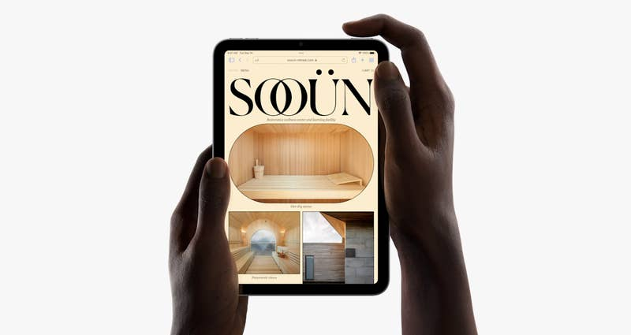

Posted on September 14, 2021, at 2:23 p.m. ET
AppleFear or avoidance of the number 13 is so ingrained in Western culture that it has its own word: triskaidekaphobia. This is why hotels sometimes don’t have a 13th floor, why some cities don’t have a 13th Street, and why Jason Vorhees regularly butchers amorous teens on Friday the 13th.
However, the iPhone, Steve Jobs’ combination pocket computer and telephone, has long since slipped the surly bonds of Western culture through Apple’s mastery of supply chains and penetration of markets worldwide. We celebrate and sustain this achievement through a semiannual rite known, simply, as “September Apple Event.”
Today, the gods of progress were good, and brave. From a stage in Cupertino, California, they announced in an unmistakable voice: We are not triskaidekaphobic!
They announced the iPhone...13.
As inevitably as 13 follows 12, and "new" means "improved," the new iPhone improves upon the old iPhone. It is better than the old iPhone in two of the regular ways Apple improves the iPhone, via a more sophisticated digital camera and a faster silicon processing chip.
The new digital camera allows users to take videos in “Cinematic Mode,” kind of like a video version of Portrait Mode, which blurs the background behind human subjects, making human faces appear sharper and (though human attractiveness is highly subjective) more attractive. Now this effect can be achieved by iPhone owners in motion. It promises to make your poor home movies look bizarrely professional, as if they were handled by a Hollywood cinematographer.
AppleThe new chip, A15 Bionic, improves over the previous chip, A14, by being faster. How did they make this chip even faster? (Apple says it can do 15.8 trillion operations per second.) The company shrunk thousands of the world’s fastest sprinters down to microscopic size and then connected their tiny but bulging legs to really little wheels that spin so, so fast and generate power. Just kidding. No one knows how they did it. I mean, some people do, but they’ve signed nondisclosure agreements.
 Apple
Apple
Other things about the new iPhone haven’t changed, because too much change too fast is scary. For example, the iPhone comes in the same three sizes, which it doesn’t call "small," "medium," and "large" — but you can if you want. Apple still refers to this big boy as the iPhone Pro:
AppleApple is making a big deal about the camera setup on the iPhone 13 Pro and Pro Max. The setup is pretty slick, and the company is touting the new ProRes mode as a way to essentially shoot feature films on your iPhone. The prices for the current range of iPhones now look like this:
AppleApple also refreshed its lineup of iPads, from a relatively inexpensive entry-level iPad ($329) to a souped-up iPad Mini. The Mini is the first redesign in years, and it comes with the new shape, better cameras, and more powerful processor that you'd expect. It also now supports Center Stage, the front-facing video camera that makes for better video chatting. It starts at 500 bucks and will start shipping next week.
iPad Mini
Apple